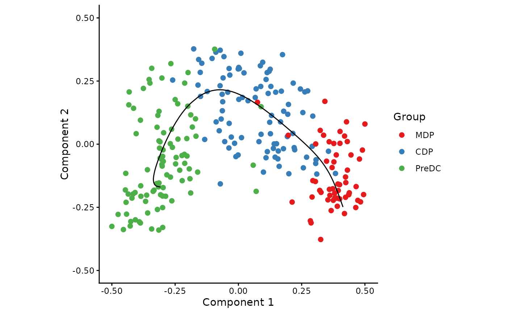

SCORPIUS: Trajectory inference from single-cell RNA sequencing data.
Source:R/package.R
SCORPIUS-package.RdSCORPIUS orders single cells with regard to an implicit timeline, such as cellular development or progression over time.
Trajectory Inference functions
infer_trajectory, infer_initial_trajectory, reverse_trajectory, gene_importances, extract_modules
References
Cannoodt R. et al., SCORPIUS improves trajectory inference and identifies novel modules in dendritic cell development, bioRxiv (Oct., 2016). doi:10.1101/079509 (PDF).
Author
Maintainer: Robrecht Cannoodt rcannood@gmail.com (ORCID)
Other contributors:
Wouter Saelens wouter.saelens@ugent.be (ORCID) [contributor]
Examples
## Load dataset from Schlitzer et al., 2015
data("ginhoux")
## Reduce dimensionality and infer trajectory with SCORPIUS
space <- reduce_dimensionality(ginhoux$expression, "spearman")
traj <- infer_trajectory(space)
## Visualise
draw_trajectory_plot(
space,
path = traj$path,
progression_group = ginhoux$sample_info$group_name
)
#> Warning: `aes_string()` was deprecated in ggplot2 3.0.0.
#> ℹ Please use tidy evaluation idioms with `aes()`.
#> ℹ See also `vignette("ggplot2-in-packages")` for more information.
#> ℹ The deprecated feature was likely used in the SCORPIUS package.
#> Please report the issue at <https://github.com/rcannood/SCORPIUS/issues>.
#> Warning: Using `size` aesthetic for lines was deprecated in ggplot2 3.4.0.
#> ℹ Please use `linewidth` instead.
#> ℹ The deprecated feature was likely used in the SCORPIUS package.
#> Please report the issue at <https://github.com/rcannood/SCORPIUS/issues>.
#> Ignoring unknown labels:
#> • fill : "Group"
